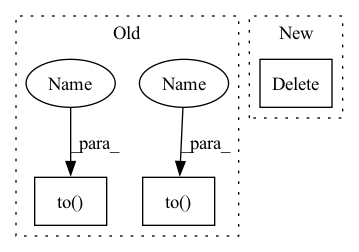

Pattern ID :14089

Before Change
edge_index, edge_weight = from_scipy_sparse_matrix(sp.csr_matrix(adj_matrix))
data.V, data.U = V.to(device), U.to(device)
data.edge_index, data.edge_weight = edge_index.to(device), edge_weight.to(device)
return data
def __repr__(self) -> str:
return f"{self.__class__.__name__}(K={self.K})"
After Change
// edge_index, edge_weight = from_scipy_sparse_matrix(adj_matrix)
// data.edge_index, data.edge_weight = edge_index.to(device), edge_weight.to(device)
data.adj_t = torch.as_tensor(adj_matrix, dtype=torch.float, device=device)
del data.edge_index, data.edge_weight
return data
def __repr__(self) -> str:
return f"{self.__class__.__name__}(K={self.K})"
In pattern: SUPERPATTERN
Frequency: 3
Non-data size: 3
Instances
Fragment ID: 47041837
Project Name: edisonleeeee/graphwar
Commit Name: 9c4006bb8370bd7e5503fce8b583ae164354dd7a
Time: 2022-05-31
Author: cnljt@outlook.com
File Name: graphwar/defense/purification.py
M Class Name: Eigendecomposition
N Class Name: Eigendecomposition
M Method Name: __call__(3)
N Method Name: __call__(3)
M Parent Class: BaseTransform
N Parent Class: BaseTransform
M File Name: graphwar/defense/purification.py
N File Name: graphwar/defense/purification.py
M Start Line: 117
M End Line: 136
N Start Line: 117
N End Line: 137
'>
Before Change
tf = ArticulatoryCombinedTextFrontend(language=lang)
_, sr = sf.read(path_list[0])
if speaker_embedding:
wav2mel = torch.jit.load("Models/SpeakerEmbedding/wav2mel.pt").to(device)
dvector = torch.jit.load("Models/SpeakerEmbedding/dvector-step250000.pt").eval().to(device)
ap = AudioPreprocessor(input_sr=sr,
output_sr=16000,
melspec_buckets=80,
hop_length=256,
n_fft=1024,
cut_silence=cut_silence)
acoustic_model = acoustic_model.to(device)
dc = DurationCalculator(reduction_factor=reduction_factor)
dio = Dio(reduction_factor=reduction_factor)
energy_calc = EnergyCalculator(reduction_factor=reduction_factor)
for path in tqdm(path_list):
transcript = self.path_to_transcript_dict[path]
wave, sr = sf.read(path)
if min_len <= len(wave) / sr <= max_len:
norm_wave = ap.audio_to_wave_tensor(audio=wave, normalize=True, mulaw=False)
norm_wave_length = torch.LongTensor([len(norm_wave)])
melspec = ap.audio_to_mel_spec_tensor(norm_wave, normalize=False).transpose(0, 1)
melspec_length = torch.LongTensor([len(melspec)])
text = tf.string_to_tensor(transcript)
cached_text = tf.string_to_tensor(transcript).squeeze(0).cpu().numpy()
cached_text_len = torch.LongTensor([len(cached_text)]).numpy()
cached_speech = ap.audio_to_mel_spec_tensor(wave).transpose(0, 1).cpu().numpy()
cached_speech_len = torch.LongTensor([len(cached_speech)]).numpy()
if not speaker_embedding:
os.path.join(cache_dir, "durations_visualization")
attention_map = acoustic_model.inference(text_tensor=text.squeeze(0).to(device),
speech_tensor=melspec.to(device),
use_teacher_forcing=True,
speaker_embeddings=None,
use_att_constraint=True)[2]
cached_duration = dc(attention_map, vis=os.path.join(cache_dir, "durations_visualization",
path.split("/")[-1].rstrip(".wav") + ".png"))[0].cpu()
if np.count_nonzero(cached_duration.numpy() == 0) > 4:
continue
else:
wav_tensor, sample_rate = torchaudio.load(path)
mel_tensor = wav2mel(wav_tensor.to(device), sample_rate)
cached_speaker_embedding = dvector.embed_utterance(mel_tensor)
attention_map = acoustic_model.inference(text_tensor=text.squeeze(0).to(device),
speech_tensor=melspec.to(device),
After Change
wav_tensor, sample_rate = torchaudio.load(path)
mel_tensor = wav2mel(wav_tensor, sample_rate).to(device)
cached_speaker_embedding = dvector.embed_utterance(mel_tensor)
del mel_tensor
attention_map = acoustic_model.inference(text_tensor=text.squeeze(0).to(device),
speech_tensor=melspec.to(device),
use_teacher_forcing=True,
speaker_embeddings=cached_speaker_embedding,
'>
Fragment ID: 47041836
Project Name: digitalphonetics/ims-toucan
Commit Name: 051c991e28bbeb51de2bd845ec95133a9540a1b0
Time: 2021-09-12
Author: florian.lux@ims.uni-stuttgart.de
File Name: TrainingInterfaces/Text_to_Spectrogram/FastSpeech2/FastSpeechDataset.py
M Class Name: FastSpeechDataset
N Class Name: FastSpeechDataset
M Method Name: cache_builder_process(11)
N Method Name: cache_builder_process(11)
M Parent Class: Dataset
N Parent Class: Dataset
M File Name: TrainingInterfaces/Text_to_Spectrogram/FastSpeech2/FastSpeechDataset.py
N File Name: TrainingInterfaces/Text_to_Spectrogram/FastSpeech2/FastSpeechDataset.py
M Start Line: 109
M End Line: 150
N Start Line: 112
N End Line: 159
'>
Before Change
if not inplace:
data = copy(data)
device = data.edge_index.device
adj_matrix = to_scipy_sparse_matrix(data.edge_index, data.edge_weight,
num_nodes=data.num_nodes).tocsr()
if self.normalize:
adj_matrix = scipy_normalize(adj_matrix)
V, U = sp.linalg.eigsh(adj_matrix, k=self.K)
adj_matrix = (U * V) @ U.T
adj_matrix[adj_matrix < 0] = 0.
V = torch.as_tensor(V, dtype=torch.float)
U = torch.as_tensor(U, dtype=torch.float)
edge_index, edge_weight = from_scipy_sparse_matrix(sp.csr_matrix(adj_matrix))
data.V, data.U = V.to(device), U.to(device)
data.edge_index, data.edge_weight = edge_index.to(device), edge_weight.to(device)
return data
def __repr__(self) -> str:
return f"{self.__class__.__name__}(K={self.K})"
After Change
// edge_index, edge_weight = from_scipy_sparse_matrix(adj_matrix)
// data.edge_index, data.edge_weight = edge_index.to(device), edge_weight.to(device)
data.adj_t = torch.as_tensor(adj_matrix, dtype=torch.float, device=device)
del data.edge_index, data.edge_weight
return data
def __repr__(self) -> str:
return f"{self.__class__.__name__}(K={self.K})"
'>
Fragment ID: 47041834
Project Name: edisonleeeee/greatx
Commit Name: 9c4006bb8370bd7e5503fce8b583ae164354dd7a
Time: 2022-05-31
Author: cnljt@outlook.com
File Name: graphwar/defense/purification.py
M Class Name: Eigendecomposition
N Class Name: Eigendecomposition
M Method Name: __call__(3)
N Method Name: __call__(3)
M Parent Class: BaseTransform
N Parent Class: BaseTransform
M File Name: graphwar/defense/purification.py
N File Name: graphwar/defense/purification.py
M Start Line: 117
M End Line: 136
N Start Line: 117
N End Line: 137